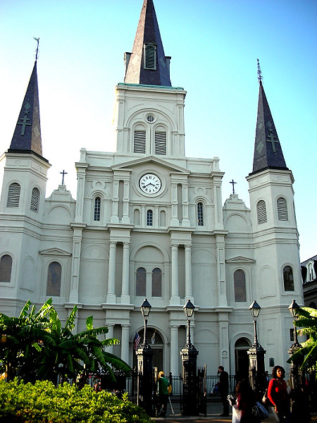

Johnnie and Oberta Baker's Photo Album Gallery Previous Next
|

Few cities in the world are so identified by a building as is New Orleans. The city is instantly recognized by its cathedral and its position overlooking Jackson Square. The Cathedral-Basilica of St. Louis King of France is the oldest Catholic cathedral in continual use in the United States.The first church on the site was built in 1718; the third, built in 1789, was raised to cathedral rank in 1793. The cathedral was expanded and largely rebuilt in 1850, with little of the 1789 structure remaining. |